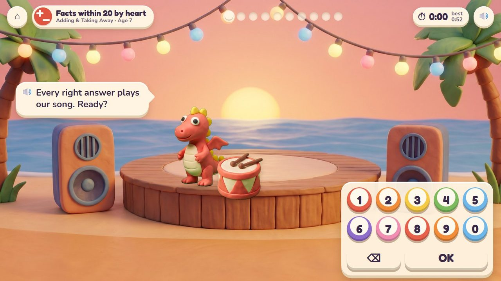
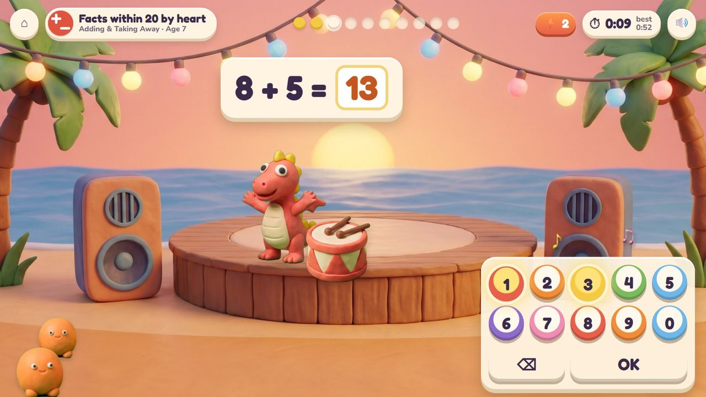
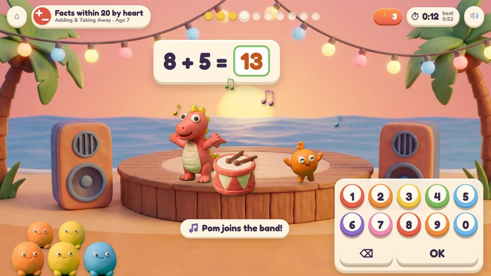
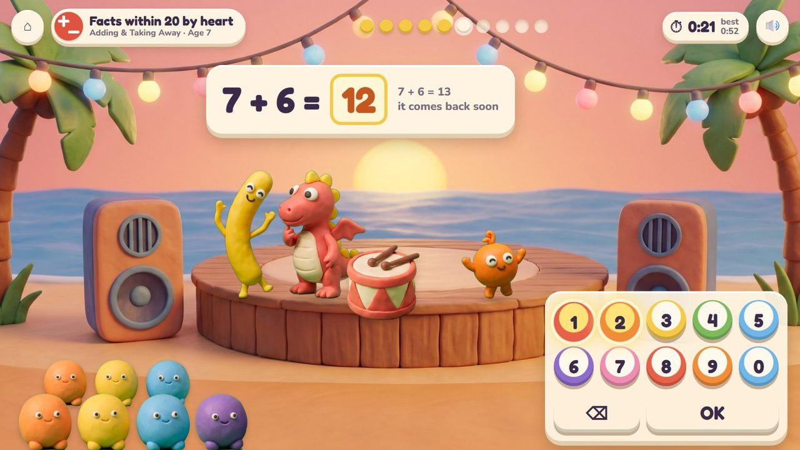
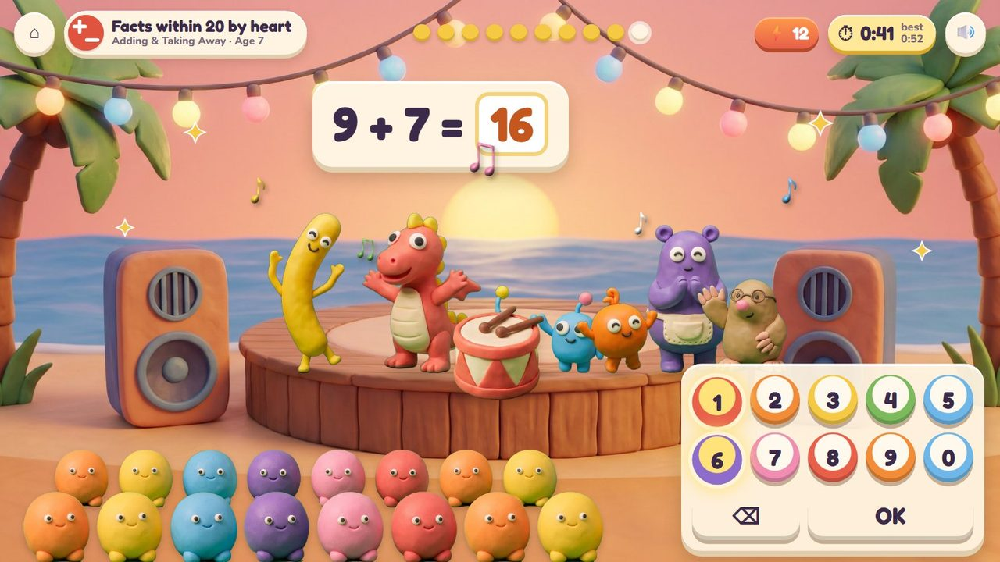
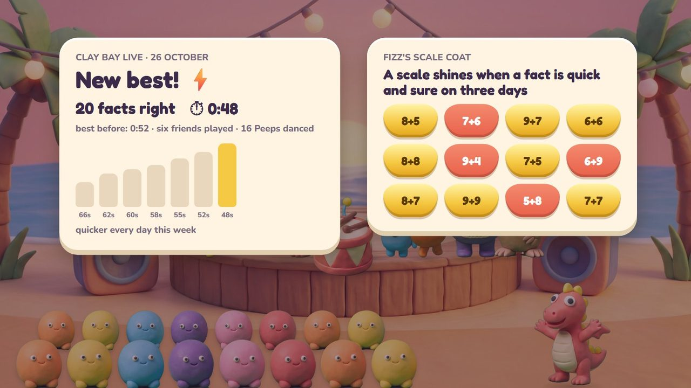
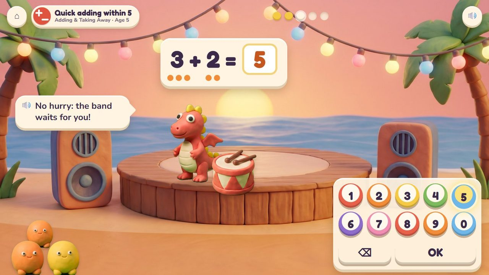
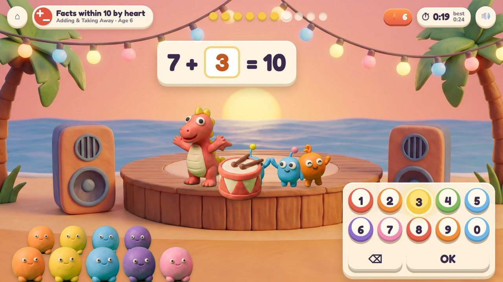
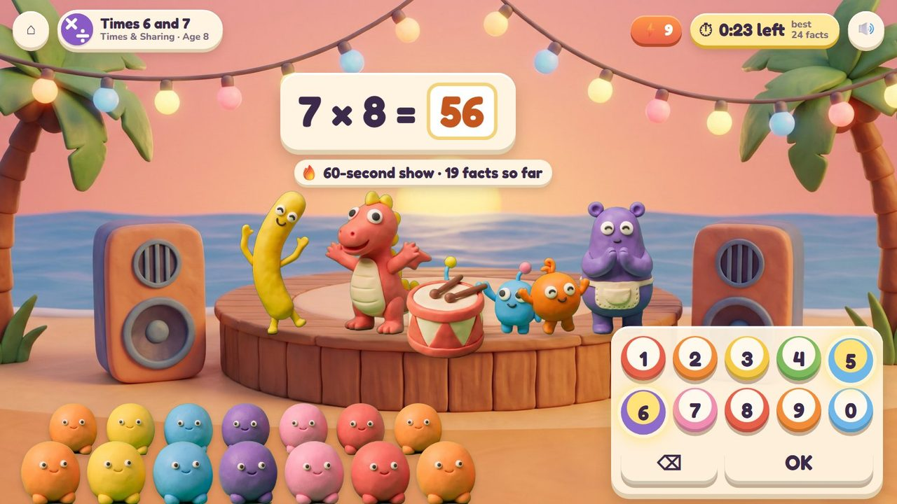
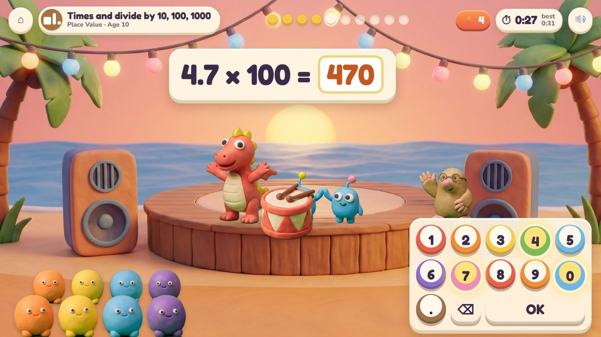

Number facts at speed: the number pad is a set of clay drums.
34 lessons (16 taught here first, the rest practised here) in 7 topics:
Counting & NumbersAdding & Taking AwayTimes & SharingPlace ValueFractions & DecimalsMeasuringPatterns & Graphs

Fizz's beach concert. A fact appears over the stage; the child taps the answer on the pad, whose keys are little clay drums that each play a beat, and presses OK. Every right answer plays a bar of the band's song, brings a friend on stage and more Peeps to the crowd. A miss: the answer shows at once and that fact comes back soon. The music never stops.
Tap the drum pads, then OK.
The gig poster (today's facts, your time, your best) and Fizz's Scale Coat: one scale for every fact, shiny when it was quick and sure on three days.
A storyboard of the game in one lesson, drawn from the app's own clay pictures.
Fizz on the stage, the pad of drums, the clock at 0:00 with your best beside it.
🔊 “Every right answer plays our song. Ready?”

8 + 5: each key plays a beat as it is tapped.

Right: the band plays a bar, Pom joins on stage, the crowd grows.

7 + 6 is not 12: the answer shows at once and comes back soon; the music goes on.

Twelve in a row: every friend on stage, a big crowd, the clock ahead of your best.

New best, quicker every day this week; Fizz's Scale Coat shows which facts are quick and sure.
Drum Stage IS the quick round: ten facts against your best at 6 and 7, a 60-second show from 8. At 5 there is no clock.
The badge at the top left says the topic, the lesson and the age.

No clock at 5: dots under the numbers, and the band waits.

Number bonds: 7 + ? = 10.

The 60-second show: how many facts before the music ends?

The pad gets a decimal point: 4.7 × 100 = 470.
| Age 5Kindergarten | Facts within 5 with dots under the numbers; no clock: the band waits for you. |
| Age 6Grade 1 | Facts within 10 by heart; make 10 (7 + ? = 10); 10 more and 10 less. |
| Age 7Grade 2 | Facts within 20; add or take 10 or 100 in your head. |
| Age 8Grade 3 | Times tables in families (2, 5, 10 · 3, 4 · 6, 7 · 8, 9); division facts; times tens. |
| Age 9Grade 4 | Times 10, 100 and 1000; multiples; a fraction of a whole number; changing units. |
| Age 10Grade 5 | Decimals times and divided by 10, 100 and 1000; powers of ten; brackets first. |
the current lessons' facts, mixed with older ones that need practice
8 + 5 = ?, 8 + ? = 13 or ? − 5 = 8
none at 5; ten facts against your best at 6-7; 60 seconds from 8
dots under small numbers; after a miss the answer, then the fact again soon
0-9 and OK; a decimal point and a fraction bar for older children
Age by age they are on the full list; here grouped by topic (the first activity named teaches a lesson, the others practise it).
K.CC.3Peek-a-Peep · Drum StageK.OA.4Poke Pals · Seesaw Twins · Drum StageK.OA.5Drum Stage · Peek-a-PeepK.OA.5Drum StageK.OA.1Seesaw Twins · Drum Stage1.OA.6Drum Stage · Critter Maker · Peek-a-Peep1.OA.6Drum Stage1.OA.4Seesaw Twins · Drum Stage1.OA.8Seesaw Twins · Drum Stage2.OA.2Drum Stage2.NBT.8Number Lift · Drum Stage2.OA.1Seesaw Twins · Drum Stage3.OA.7Drum Stage · Poke Pals3.OA.7Drum Stage · Garden Beds3.OA.7Drum Stage · Garden Beds3.OA.7Drum Stage · Garden Beds3.OA.5Drum Stage · Critter Maker3.OA.5Garden Beds · Drum Stage3.OA.7Drum Stage · Poke Pals3.OA.6Seesaw Twins · Drum Stage3.OA.4Seesaw Twins · Drum Stage3.OA.9Drum Stage · Garden Beds3.NBT.3Drum Stage · Number Lift4.OA.4Garden Beds · Drum Stage4.OA.4Drum Stage · Number Lift4.NBT.1Drum Stage · Number Lift1.NBT.5Number Lift · Drum Stage1.NBT.6Number Lift · Drum Stage5.NBT.2Number Lift · Drum Stage5.NBT.2Drum Stage · Number Lift4.NF.4Smoothie Stand · Drum Stage5.NF.4Poke Pals · Drum Stage4.MD.1Bridge Builders · Drum Stage5.OA.1Seesaw Twins · Drum Stage